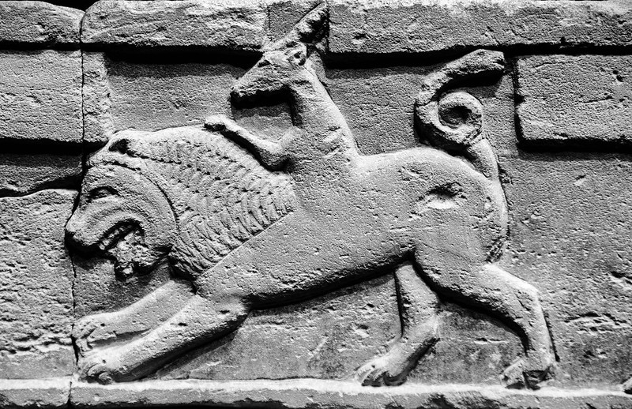

Gummy hears a very broad range of sounds on a day to day basis due to him living in a place that is filled with hybrid animals. For instance, his friend the chimera could be heard at any time of the day hissing and bleating at the top of his lungs. Once a year the animals come together to do a ritual to bring more water to the jungle. This jungle is performed by burning fruits and writing on stone tablets then dropping them in water. The jungle has extremely rough weather with winds reaching 130mph and deadly thunderstorms that shake every pebble on the ground.
